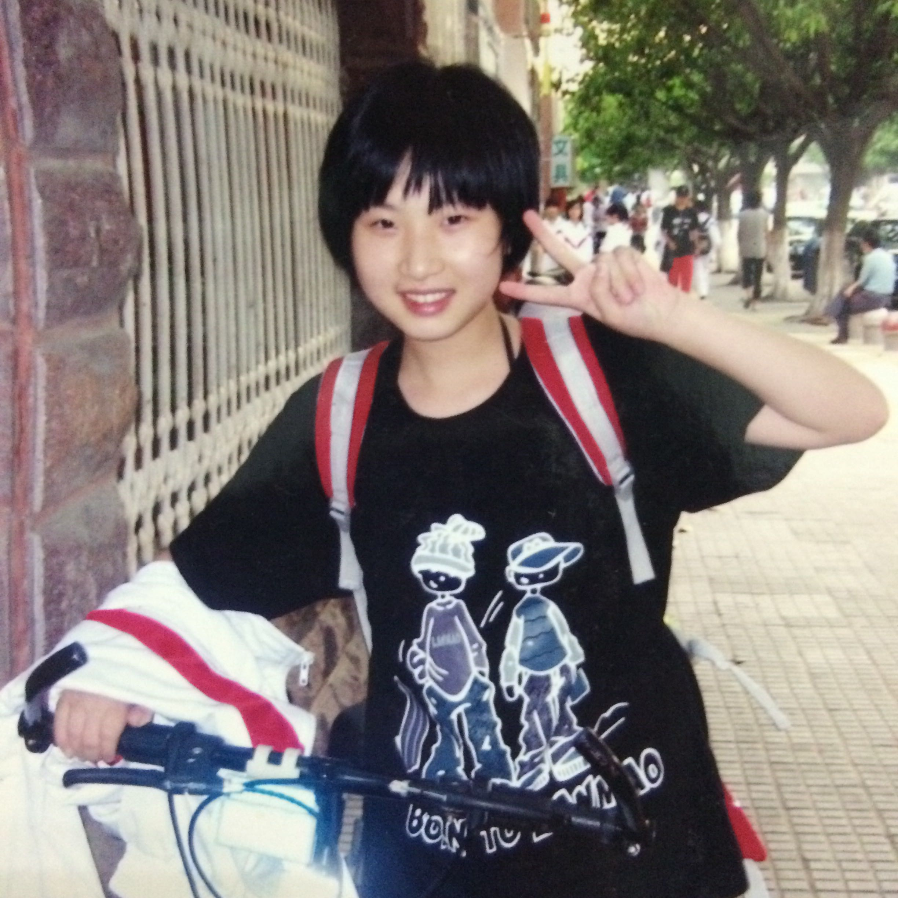
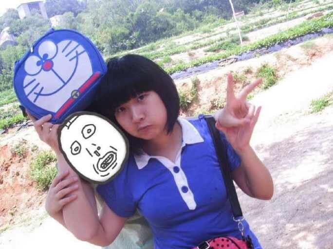
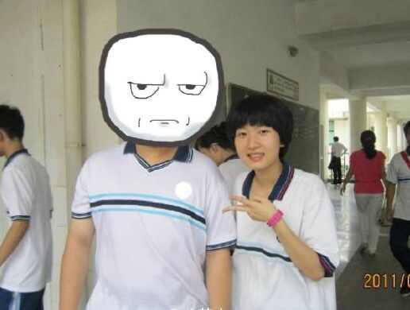
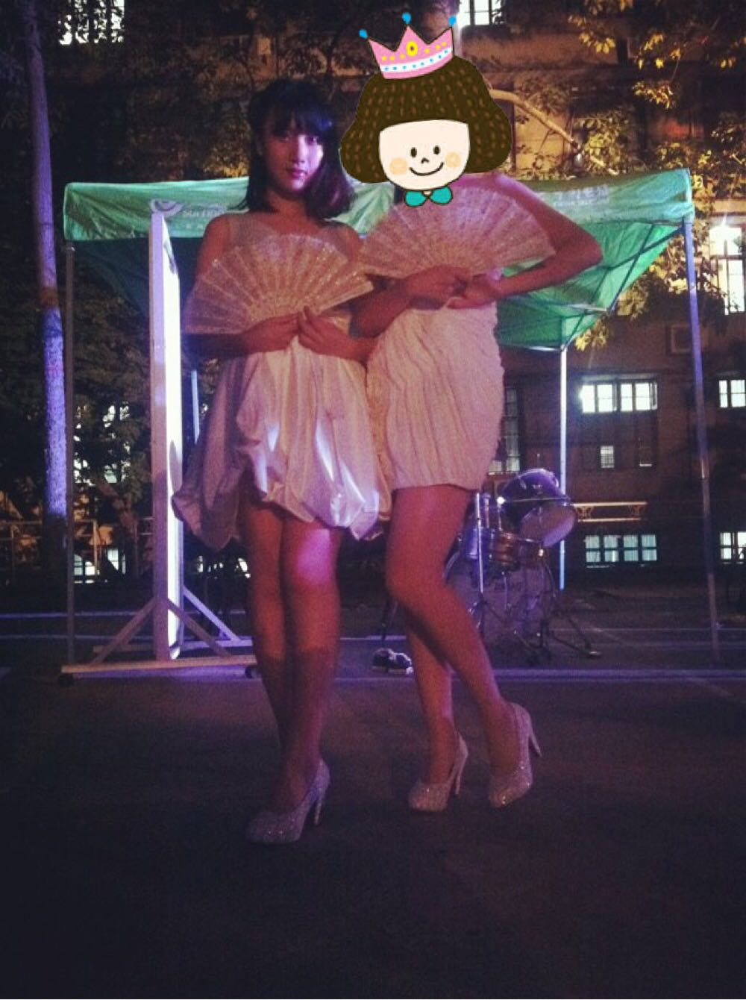
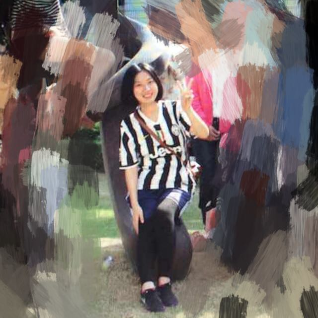
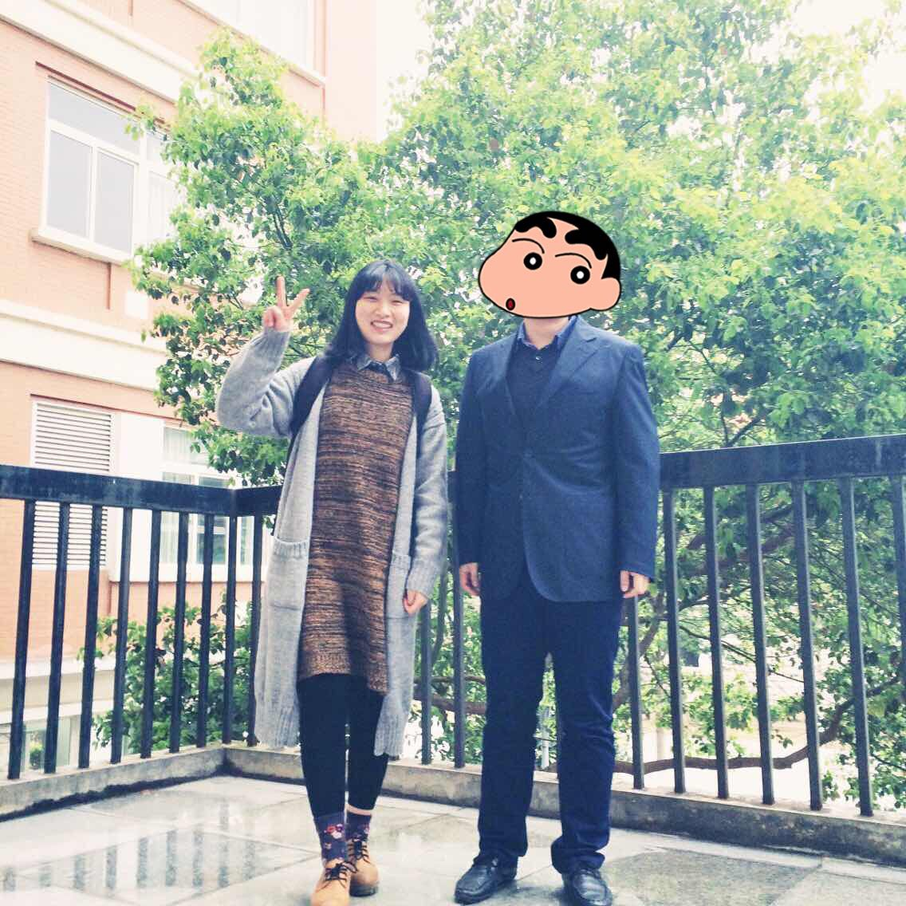

正文: @Parasession ，为了回答这个问题特地下了app，而当我开始回答的时候已经忘记问题是什么了，好在我不会忘了发自拍，噢不，为了展现真实，不发大头自拍。
100到120，没有在同样身高的时候发生过，但是初中三年长了6cm胖了30kg的变化也是略可观。
初一的时候，153/90，脸肉肉的是因为婴儿肥。感觉自己萌萌嗒～
初二，具体身高体重记不清，但是明显已经开始变胖。
这张在题主提到的那个问题里po过，159/120，最胖的时候。好在目前再也没有超过，一看到这样就不敢再吃了。
高中毕业，161，已经比初中瘦十几斤，当时说法是读书太认真，现在回想起来应该是食堂太难吃。
然后就是大学——（天生粗腿，无力回天。）此处应该介绍一下照片时间可是我已经忘记了。后两张短发是去年暑假。

但，不幸的是，从去年10月又开始胖了。
实习直接就胖了十几斤（因为实习学校食堂又太好吃）！

最后一张是五天前的毕业答辩，162/110，多么质朴。
整个回答都没有自拍觉得自己太伟大了。
最后说一个鬼故事：夏天要来了。